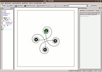

KTurtle
Dieser Artikel wurde für die folgenden Ubuntu-Versionen getestet:
Ubuntu 14.04 Trusty Tahr
Zum Verständnis dieses Artikels sind folgende Seiten hilfreich:
KTurtle  ist ein Programm, mit dem man spielerisch den Einstieg in die Programmierung erlernen kann. Dabei kommt die sogenannte Schildkröten-Grafik zum Einsatz, d.h. mit Hilfe des geschriebenen Programms kann man eine Schildkröte auf dem Bildschirm bewegen, der Weg der Schildkröte wird als Linie gezeichnet. So ist es möglich, (geometrische) Muster zu programmieren. Als Programmiersprache kommt dazu ein Teilmenge der Programmiersprache Logo zum Einsatz, welche als einsteigerfreundlich und leicht erlernbar gilt.
ist ein Programm, mit dem man spielerisch den Einstieg in die Programmierung erlernen kann. Dabei kommt die sogenannte Schildkröten-Grafik zum Einsatz, d.h. mit Hilfe des geschriebenen Programms kann man eine Schildkröte auf dem Bildschirm bewegen, der Weg der Schildkröte wird als Linie gezeichnet. So ist es möglich, (geometrische) Muster zu programmieren. Als Programmiersprache kommt dazu ein Teilmenge der Programmiersprache Logo zum Einsatz, welche als einsteigerfreundlich und leicht erlernbar gilt.
KTurtle ist Teil des KDE Education Projekts und ist ebenfalls in Edubuntu enthalten.
Installation¶
KTurtle wird über das Paket
kturtle
 mit apturl
mit apturl
Paketliste zum Kopieren:
sudo apt-get install kturtle
sudo aptitude install kturtle
installiert[1]. Für (X)Ubuntu werden dabei eine ganze Reihe von KDE-Paketen mit installiert. Wer deutsche Menüs und optional auch deutsche Befehle für die Programmierung haben möchte, der muss zusätzlich das Paket
language-pack-kde-de
mit apturl
Paketliste zum Kopieren:
sudo apt-get install language-pack-kde-de
sudo aptitude install language-pack-kde-de
installieren.
Weiterhin ist das Programm über die Metapakete ubuntu-edu-primary, ubuntu-edu-secondary oder ubuntu-edu-tertiary installierbar.
Benutzung¶
Nach der Installation kann kturtle gestartet bzw unter KDE über
"K-Menü -> Lernprogramme -> Verschiedenes -> KTurtle" aufgerufen werden.[2]
 gestartet werden. Es erscheint ein dreigeteiltes Fenster: In der Mitte sieht man die eigentlich Zeichenfläche inklusive der Schildkröte. In der linken Spalte wird der Programmcode angezeigt, in der rechten Spalte erhält man zusätzlich Informationen wie eine Übersicht über die definierten Variablen und die definierten Funktionen.
Zum Test kann man z.B. folgendes Programm eingeben
repeat 4 {
forward 100
turnleft 90
}und dann auf "Start" klicken, worauf hin ein Quadrat mit einer Kantenlänge von 100 Pixeln gezeichnet werden sollte. repeat 4 bedeutet dabei, dass die folgenden, in geschweiften Klammern eingeschlossenen Befehle viermal wiederholt werden. forward 100 bewegt die Schildkröte um 100 Pixel vorwärts, turnleft 90 führt eine Drehung um 90° nach links aus. Bei der Bewegung wird dabei stets eine Linie gezeichnet.
Weitere Beispiele bringt das KTurtle mit, diese sind über den Menüpunkt "Datei -> Beispiele" abrufbar.
Es ist grundsätzlich auch möglich, nicht nur ganze Zahlen anzugeben, sondern auch Zahlen mit Nachkommastelle. Dabei muss aber als Dezimaltrennzeichen, wie im englischen üblich, der Punkt . verwendet werden und kein Komma ,.
Weiterhin kann man die Sprache für die Programmbefehle auch auf Deutsch umstellen.
Funktionen¶
Innerhalb des Programms können auch Funktionen definiert werden, d.h. wiederverwendbare Codeblöcke, die aus dem eigentlichen Programm heraus aufgerufen werden.
Das weiter oben gezeigte Beispiel des Quadrats würde mit einer Funktion so aussehen:
learn move {
forward 100
turnleft 90
}
repeat 4 {
move
}Hier wird mit Hilfe von learn die Funktion move definiert, welche die Bewegung der Schildkröte vollführt. Anschließend wird die Funktion durch repeat viermal ausgeführt. Dieses ist natürlich ein sehr einfaches Beispiel. Es ist auch möglich, Werten an Funktionen zu übergeben, diese darin zu bearbeiten und dann wieder zurück zu geben.
Erweiterte Programmierung¶
Nun ist es nicht nur möglich, Linien mit der Schildkröte zu zeichnen, sondern man kann auch "richtige", wenn auch einfache Programme mit Text Ein- und Ausgabe zu schreiben. Neben dem Zeichnen von Linien erlaubt KTurtle auch die Zuweisung von Variablen, verschiedenen mathematische Funktionen, Eingaben (ask), Ausgaben (print), sowie Schleifen (repeat, while, for) und Bedingungen (if ... then). Als Datentypen für Variablen kennt das Programm Zahlen, Strings (=Text) und Wahrheitswerte. Eine Übersicht inklusive Erklärung zu allen Befehlen findet man im Handbuch zu KTurtle über "Hilfe -> KTurtle Handbuch" oder online .
Das folgende Programm fragt nach zwei Zahlen und dividiert diese dann. Vor der Division wird geprüft, ob der Quotient gleich Null ist, da eine Division durch Null nicht möglich ist.
reset
$x = 0
$y = 0
go $x,$y
spritehide
print "Bitte geben Sie zwei Zahlen ein, die dividiert werden soll!"
go $x,$y+20
$divident = ask "Divident"
$quotient = ask "Quotient"
if $quotient == 0 {
print "Es kann nicht durch Null geteilt werden!"
}
else
{
$ergebnis = $divident/$quotient
print "Das Ergebnis lautet: "+$ergebnis
}Der Befehl reset löscht die komplette Zeichenfläche, spritehide "versteckt" die Schildkröte, da diese hier ja nicht benötigt wird.
Zwar ist die Ausgabe von Text mit Hilfe von print möglich, allerdings wird Text auch "gezeichnet". D.h. will man mehrere Zeilen Text ausgeben, muss man sich selber um die Positionierung kümmern. Dies geschieht hier im Beispiel, in dem zuerst zwei Variablen $x und $y definiert werden, welche später für die Positionierung des Textes genutzt werden. go legt den Startpunkt für den Zeichenpunkt fest. Nach der ersten Ausgabe (print "Bitte geben Sie...") wird der Zeichenpunkt um 20 Pixel nach unter bewegt (go $x,$y+20), bevor die nächste Ausgabe erfolgt.
Deutsche Befehle¶
Wenn man das unter Installation genannte Sprachpaket installiert hat, so kann man alle Programmbefehle auch auf Deutsch eingeben. Dazu muss man zuerst die Sprache über den Menüpunkt "Einstellungen -> Skript-Sprache -> Deutsch (de)" umstellen. Danach kann man wie folgt z.B. ein Quadrat zeichnen lassen:
wiederhole 4 {
vorwärts 100
linksdrehen 90
}Ein vollständige Referenz der deutsche Befehle findet man in der deutschen KDE Dokumentation  zu KTurtle.
zu KTurtle.
Möchten Kinder, welche noch kein Englisch können, mit Hilfe von KTurtle "zeichnen", so ist der deutsche Befehlssatz durchaus sinnvoll. Möchte man das Programm allerdings zum Einstieg in die Programmierung nutzen, so sollte man sich überlegen, ob man nicht doch den englischen Befehlssatz nutzt. Der Grund dafür ist, dass "echte" Programmiersprache in der Regel ebenfalls ähnliche, englische Befehle nutzen (z.B. for, if ... then), so dass der Umstieg später leichter fällt.
- Erstellt mit Inyoka
-
 2004 – 2017 ubuntuusers.de • Einige Rechte vorbehalten
2004 – 2017 ubuntuusers.de • Einige Rechte vorbehalten
Lizenz • Kontakt • Datenschutz • Impressum • Serverstatus -
Serverhousing gespendet von